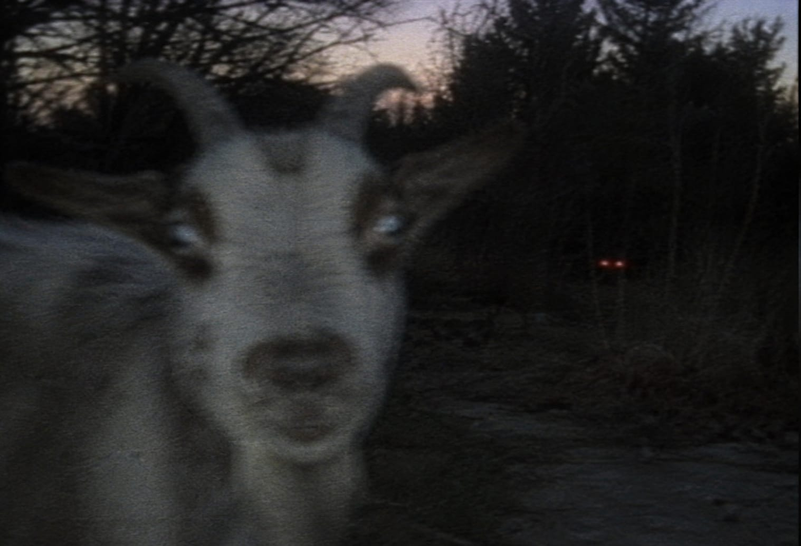
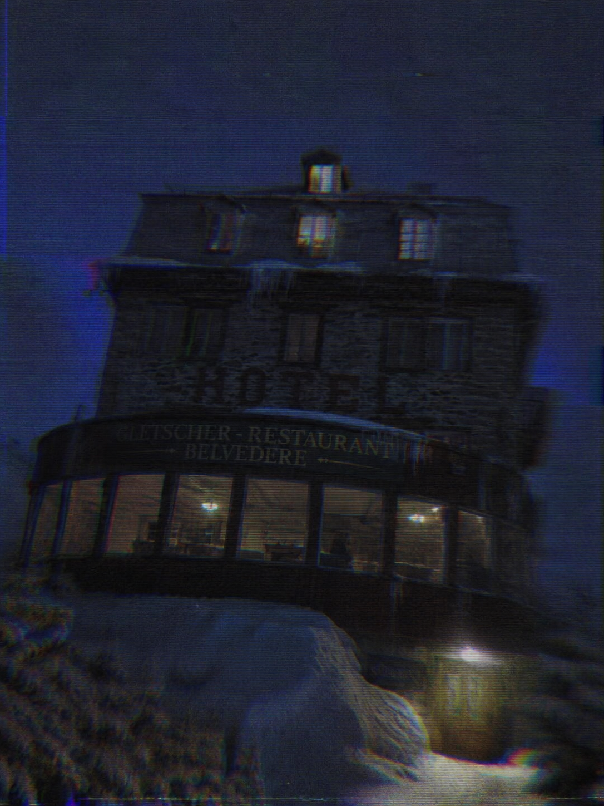
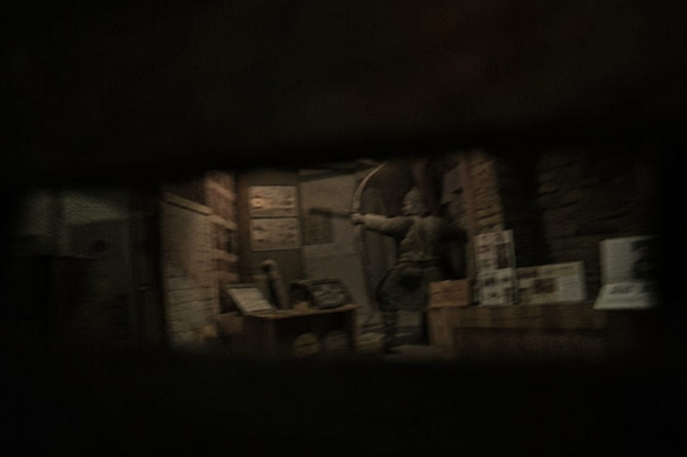
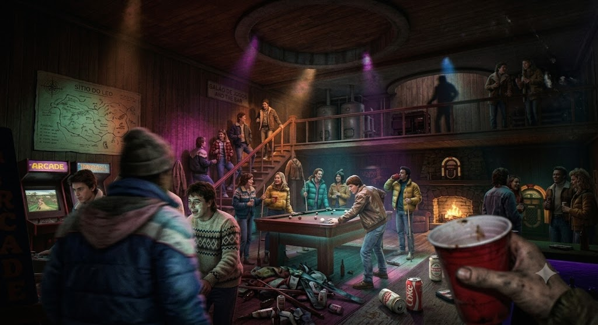
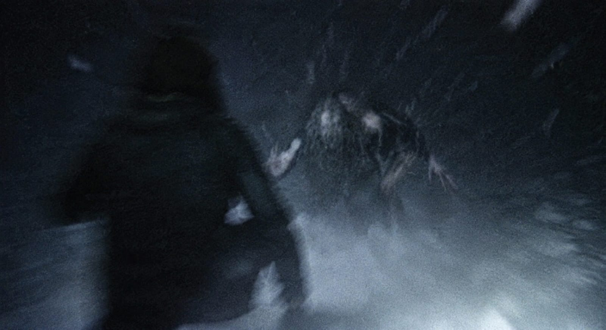
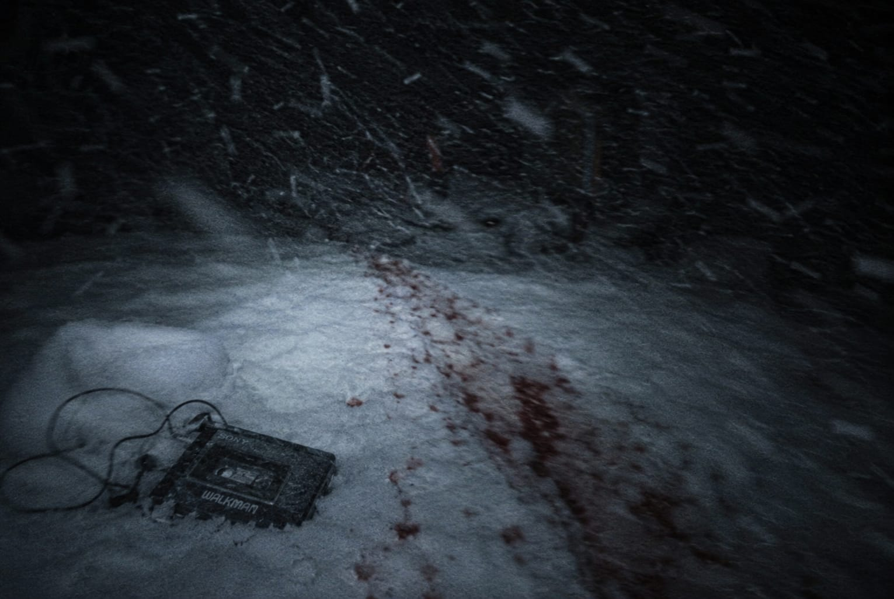
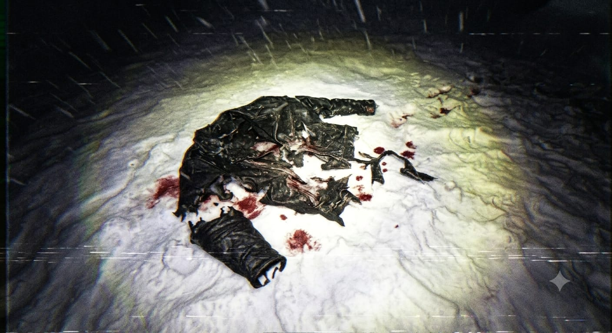

O Início do Show
LOG DE GRAVAÇÃO
A Estrada e a Montanha
A Estrada: A gravação começa trêmula dentro de uma van em movimento. O grupo está rindo e cantando alto. A câmera filma a placa da estrada indicando os últimos 2km da viagem.
A Pane: [ÁUDIO ESTOURA] Um barulho alto vindo do motor assusta a todos. A van engasga e para. Ethan desce com a câmera, focando em Shelby e Robissão encarando o capô esfumaçado. Ethan larga a câmera na mureta (o ângulo fica fixo) e tenta consertar o pistão com ferramentas. Um estalo elétrico ocorre; ele piora a situação, causando uma pane total.
A Cabra na Árvore: A câmera foca no mato. Jhonatan, Daniel e Jay-Z estão esticando as pernas. Jhonatan aponta para as árvores. O zoom da câmera tenta focar: há uma cabra, mas ela está inexplicavelmente no alto de uma árvore, apenas olhando para baixo.

Chegada e Festa: [CORTE DE CÂMERA] O grupo empurra a van suando pelos últimos metros até o estacionamento na base da montanha. O pôr do sol ilumina uma cena de festa: jovens com caixas de som e cerveja em cima de seus carros. O grupo descarrega as malas, deixando na van apenas a caixa de ferramentas e o galão reserva de gasolina. Eles se juntam para uma foto em grupo (a câmera é apoiada no capô).
Olhos Brilhantes: Ethan faz um take panorâmico da festa. Ao focar no limite da floresta, a lente captura algo perturbador: dentro de um arbusto, uma cabra completamente estática encara a lente mesmo a centena de metros de distância. O detalhe bizarro: o ao lado do animal reflete um brilho irreal no vídeo de dois feixes vermelhos mais a dentro na mata. Alisson grita no fundo, chamando Ethan para o casebre do teleférico.

O Teleférico e a Montanha
O Guarda: Dentro da velha estação, o guarda opera o maquinário rústico das três cabines. Robissão exibe arrogantemente seu ingresso VIP. O guarda se irrita, dizendo rispidamente que o check-in é feito no hotel.
O Outro Grupo: Cinco novos jovens entram em quadro: um cara forte de mullet e jaqueta de futebol americano (Scott), um gordinho de boné e blusa do Iron Maiden (Pope), uma gótica baixinha de muletas (Ed), uma garota alta de couro (Lopez) e uma garota maquiada de cabelo curto (Lilly). Robissão fita a garota de muletas de forma invasiva. Scott entra na frente: "Não fiquem no meu caminho". O clima pesa.
A Noite da Loucura: Na espera, a câmera flagra Daniel secando Alisson descaradamente. Jay-Z e Daniel analisam um mapa de 1978 no mural. Jhonatan aponta para um recorte de jornal antigo: um incidente na montanha chamado "A Noite da Loucura". Ethan pergunta ao guarda sobre isso, que desvia o olhar: "Sou novo aqui, não sei de nada".
A Subida: O grupo se divide. A câmera vai com Ethan, Jay-Z, Robissão e Shelby no segundo teleférico. Robissão dorme babando. Shelby olha o horizonte. Jay-Z balança a cabeça ouvindo seu Walkman. Ethan, por trás da lente, bate no fone de Jay-Z para provocá-lo: "Por que você mudou e ficou tão otário, Jay-Z?". [SILÊNCIO CONSTRANGEDOR]. Jay-Z fecha a cara e o resto da subida é gravada em um silêncio tenso.
A Torre de Vigia: Desembarque. A construção tem uma cela e uma sala de vigia. Ethan bisbilhota a mesa do guarda e foca a lente em anotações recentes sobre "animais nas proximidades" e "algo estranho na floresta". O guarda aparece de repente: "Isso não faz parte do tour. Fiquem longe de mim e longe de problemas!".
Gletchers Belvedere: A câmera registra uma trilha de neve entre pinheiros. Eles encontram Roger, o zelador, limpando o caminho. Ele não responde a ninguém, joga a pá no carrinho com ódio e sai andando. A voz de Ethan soa atrás da câmera: "Fica frio, cara".
O Hotel e a Preparação
Recepção: Chegada ao hotel. Ethan cruza com o outro grupo e pede desculpas por Robissão; Pope (o de camisa do Iron Maiden) sorri e aceita. Na recepção, as mãos de todos são carimbadas com a entrada VIP. A recepcionista informa que o amigo deles, Mike, já chegou ontem e pegou a chave principal. Ela menciona o gerente Fredway e o funcionário Lucas, e indica a "casa do centro histórico" para dúvidas sobre 1978.

O Casebre Histórico: [IMAGEM ESCURA, ILUMINAÇÃO PRECÁRIA] Ethan e Daniel andam por 10 minutos na neve. O casebre está trancado. Ethan encosta a lente na janela suja: recortes, livros e bancadas. De repente, a câmera foca em uma figura humana no escuro. Ethan solta um grito agudo, a câmera cai na neve. Quando ele a levanta, o zoom revela ser apenas a estátua de um indígena com arco.

Jantar: A fita pula para o restaurante. Eles conhecem Fredway, que é prestativo e gentil. O grupo de Scott aparece com um rádio tocando música alta, chamando todos para um "esquenta" no porão. Ao fundo, um campista levanta, balbucia palavras desconexas com os olhos arregalados e desmaia no chão. O grupo ignora, achando que é bebedeira.
Gravação Escondida: [CÂMERA POSICIONADA NO CANTO DO QUARTO] Robissão e os outros saem para buscar cerveja e fliperamas. Jhonatan está no restaurante. A câmera escondida grava Alisson e Shelby fofocando sobre Jhonatan. Ethan entra em quadro e comenta que ele e Alisson dariam um belo casal.
A Festa e o Desaparecimento
O Porão: [LUZES PISCANDO, ÁUDIO ESTOURADO] Festa pesada. Ethan filma takes curtos: Alisson cantando no karaokê pela primeira vez e sendo aplaudida; uma garota estranha canta e rouba a cena; Robissão (vestindo uma regata tie-dye bizarra) tenta novamente flertar com a gótica de muletas e é rejeitado; Daniel e Alisson rindo em um fliperama; [ZOOM] Jane puxando e beijando Alex de surpresa. A lente foca no rosto em choque de Jay-Z e Alisson.

A Briga: Fim da festa. O clima explode. Jay-Z está gritando com Shelby por causa de uma foto antiga. Ethan se mete e confessa pela câmera: "Fui eu que tirei a foto". Jay-Z avança com ódio para cima da câmera. A lente treme loucamente. Ouve-se um estalo elétrico ensurdecedor—Shelby acerta Jay-Z com um taser. Jay-Z cai, levanta furioso e sai marchando para a noite.
A Floresta: Ethan segue Jay-Z pela neve, filmando suas costas. Ele pede desculpas. Jay-Z para, a voz embargada. Ele confessa que se arrepende "daquela noite", que queria voltar no tempo, que se sente um farsa e que nunca se sentiu realmente parte do grupo.
O Ataque: [FALHAS NA TELA, CHUVISCO] Do nada, uma sombra colossal passa em rasante no limite superior do quadro. Um impacto sonoro. Jay-Z desaparece do foco. Ethan grita. A câmera balança violentamente enquanto ele corre em direção aos gritos desesperados de Jay-Z.

O Fim da Linha: Ethan encontra o Walkman na neve. Alguns metros à frente, o casaco rasgado. A câmera captura um ou dois frames borrados de algo—ou alguém—arrastando Jay-Z violentamente para baixo, para dentro da neve e terra. Ethan cai de joelhos. A câmera foca nele cavando a neve histericamente com as mãos nuas. Não há nada. Apenas terra congelada.


FIM DA FITA #01